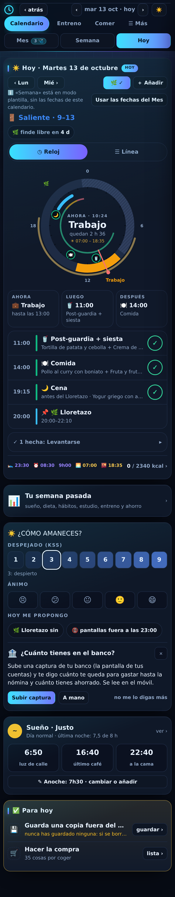
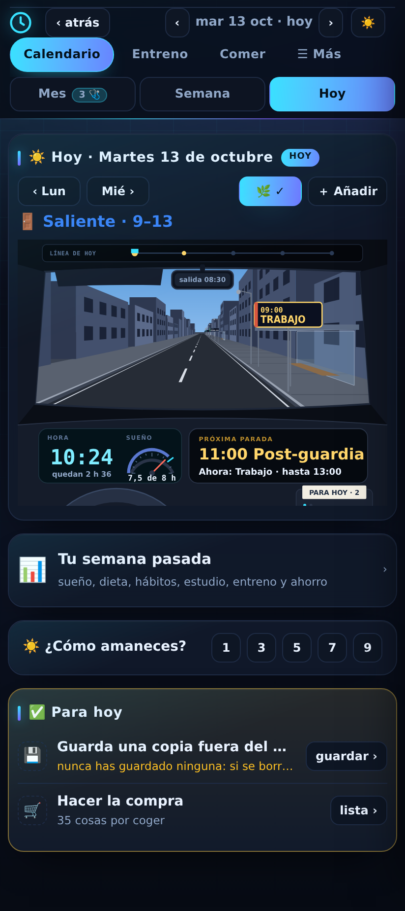
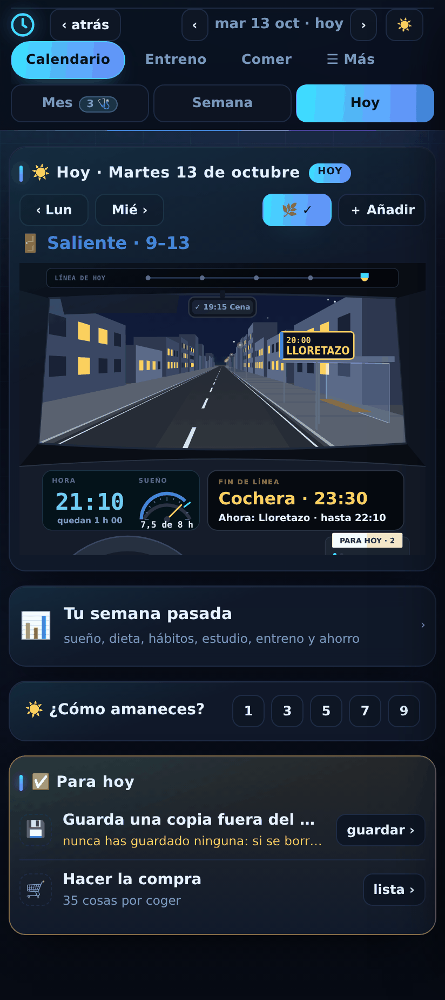
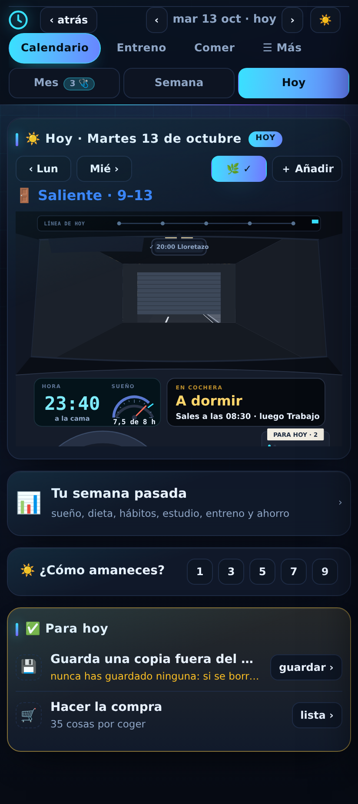

Por el parabrisas, la calle: cada cosa del día es una parada con su marquesina y su letrero, en el orden en que llegan, y el autobús va de una a otra según pasa la hora (parado mientras dura lo de ahora, de camino en los ratos libres). El cielo sigue la luz del día. En el salpicadero, lo que se lee de un vistazo: la hora y lo que queda, el depósito de «sueño», la próxima parada y lo de ahora. Arriba, la línea de hoy con todas las paradas; en el retrovisor, la última que pasaste. De noche estás en la cochera con la persiana bajada; al despertar sube y sales. Tocar un letrero, el visor, el depósito o la máquina de billetes («Para hoy») abre lo suyo.
Antes

2 102 px: 2,3 pantallas.
Conductor · 10:24

924 px: una pantalla. Parado en el trabajo; la próxima, a las 11:00.
Conductor · 21:10

De noche: farolas, ventanas encendidas y los faros.
Conductor · 23:40

En la cochera, persiana bajada: a qué hora sales mañana.
El conductor, vivo (arrastra para mover la hora · toca un letrero)